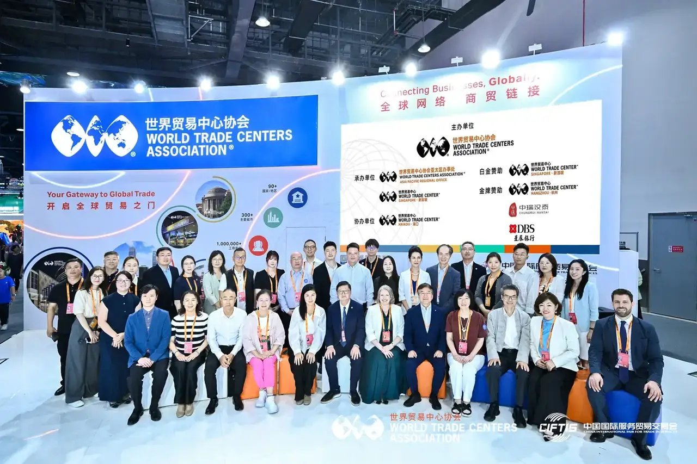
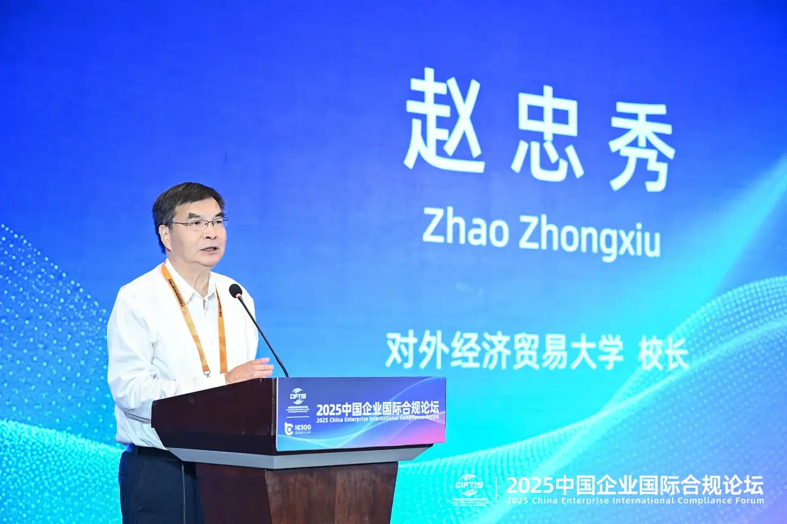
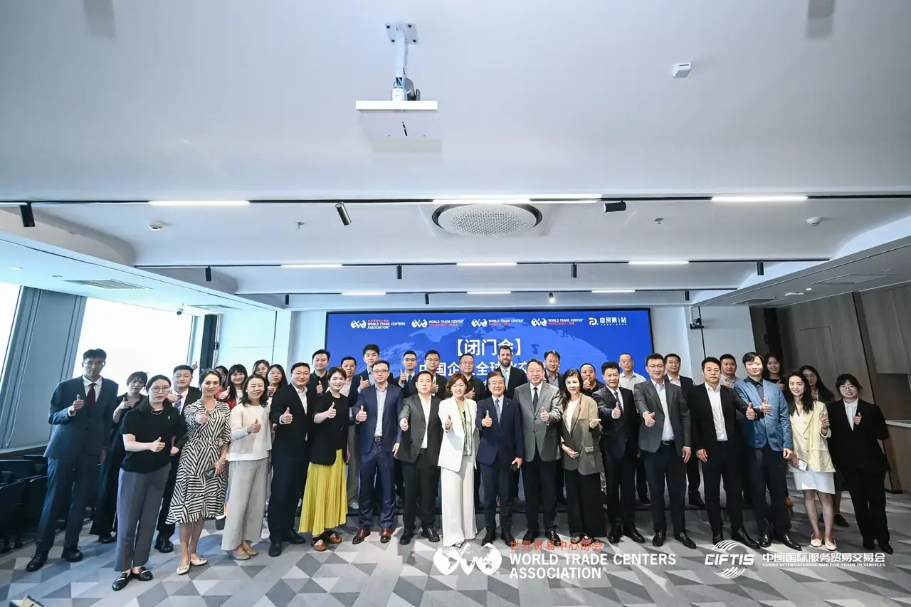
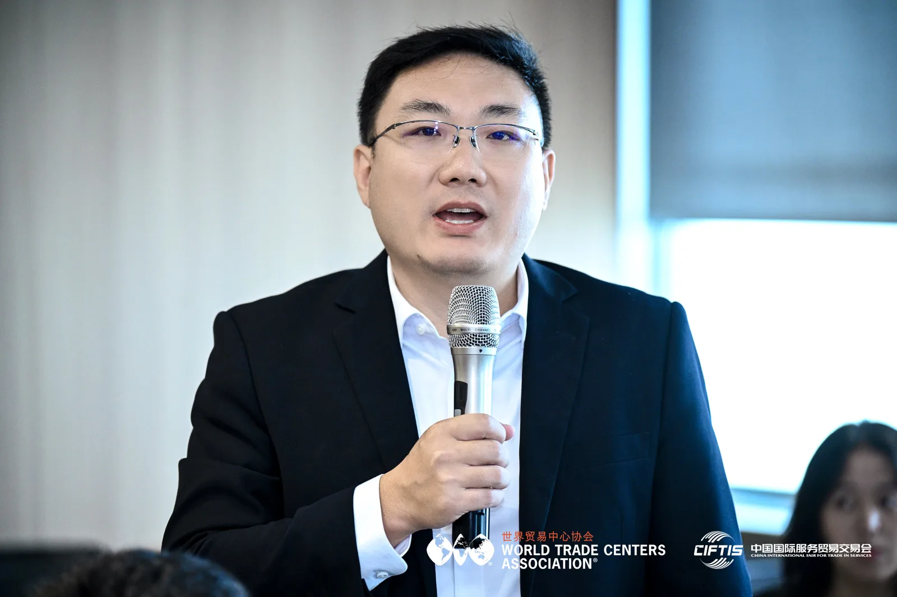
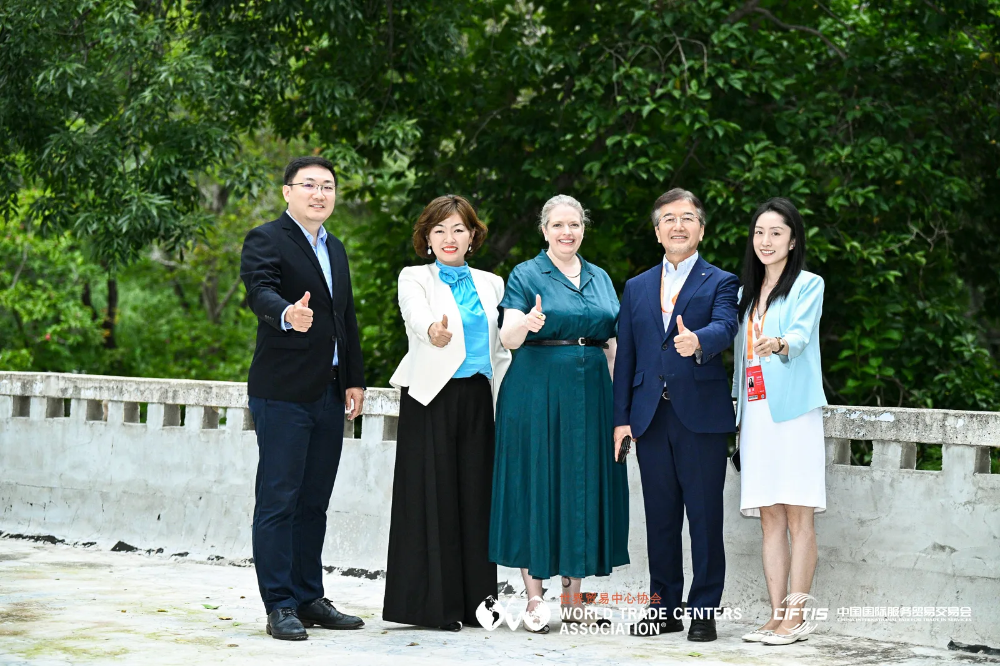
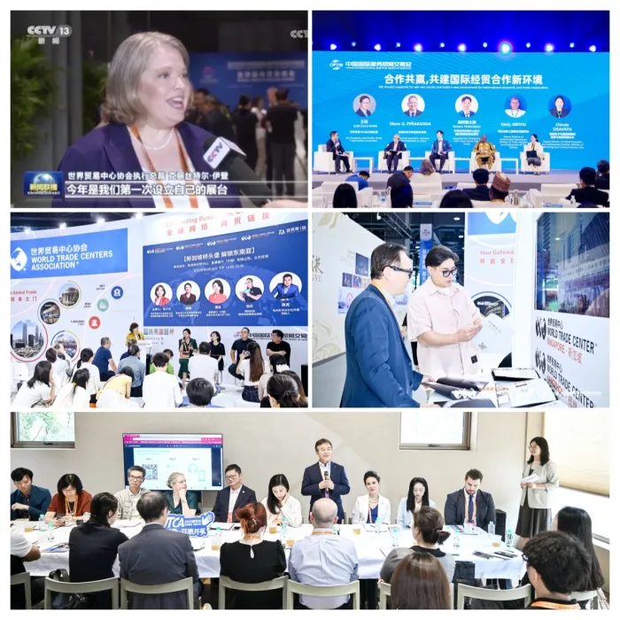
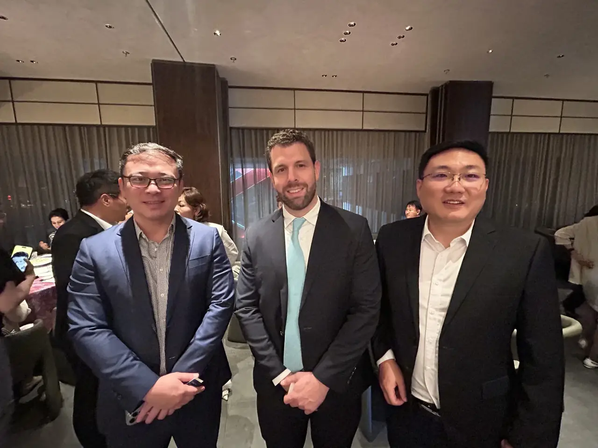
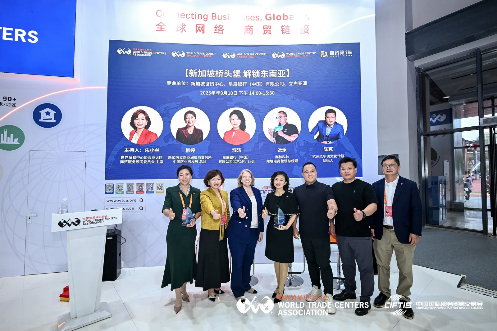
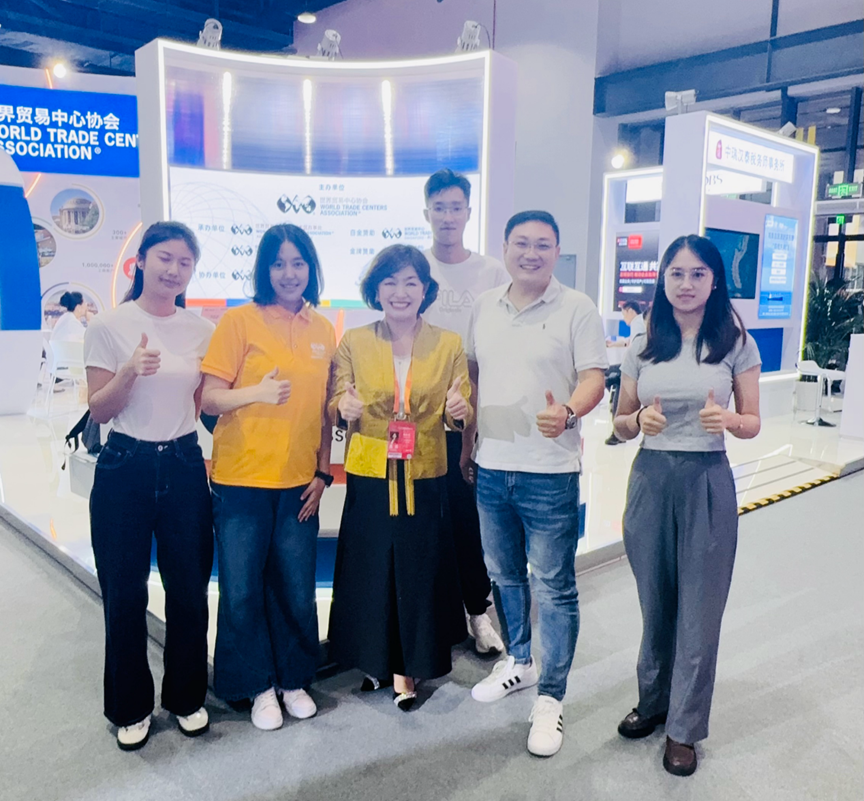

——我在2025年服贸会现场看到的一个变化
2025年9月，我在北京参加中国国际服务贸易交易会（服贸会）。那时，我更多是以参与者和观察者的身份，站在WTCA展馆里，看中国企业如何讨论出海。
这是WTCA首次在服贸会上设立自己的展馆。几天时间里，来自不同国家和地区的世界贸易中心代表、商业伙伴和中国企业代表聚在一起，谈国际贸易、谈企业出海，也开始越来越具体地讨论：一家中国企业真正进入一个陌生市场，第一步究竟应该怎么走？
现在，作为 新加坡世贸秘书长兼首席运营官董立鑫，回头再看那几天，我反而越来越清楚另一个问题：新加坡究竟应该在中国企业全球化的路径上，扮演什么角色？

9月10日，服贸会正式开幕。WTCA执行总裁克丽丝特尔·伊登（Crystal Edn）出席开幕式"全球服务贸易峰会"。在这样的场合，大家讨论的是服务贸易、全球合作和更高水平开放。
但到了同期举行的2025中国企业国际合规论坛，问题迅速落到了企业身上。法律、税务、金融、数据、知识产权……
这些事情平时很少出现在企业宣传册最显眼的位置，但当企业真正进入一个陌生市场，它们很快就会从"后台问题"变成决定业务能不能继续往前走的现实问题。
我当时越来越清楚：企业出海不能只讨论"去哪里"，还必须讨论"进去以后怎么做"。

服贸会期间，WTCA组织了一场中国企业出海交流闭门会。新加坡世贸中心与萨尔蒂约、东京、大阪世贸中心的代表坐在一起；另一边，是正在思考国际化布局的中国企业，包括博彦科技、明阳智能和国联股份。
大家谈的不是宏大的"海外市场机会"，而是非常具体的问题：当地谁真正懂这个行业？谁可以成为可靠的合作伙伴？资金怎么进入？
这些问题看起来琐碎，但企业真正开始国际化以后，往往就是这些问题决定事情能不能继续往下走。那一刻，我重新理解了世界贸易中心网络的意义——它真正提供的，并不只是一个地点。进入日本、墨西哥还是东南亚，企业需要的都不是一份市场报告，而是当地真正靠得住的人；新加坡也不该成为这段旅程的终点。


服贸会期间的"东南亚专场"，让我对这个问题有了更具体的认识。圆桌主题是"新加坡桥头堡，解锁东南亚"。

WTCA亚太区商贸服务顾问委员会主席朱小兰谈到，东南亚已经成为中国企业国际化布局中越来越重要的区域。接下来的讨论，则把这个问题进一步拆开：合规、金融、本地化、品牌，每一个环节都可能成为企业进入当地市场时必须面对的问题。
群核科技跨境电商营销总经理张乐的一句话，我后来一直记着：
"不是走出去，而是走进去。"
真正的本地化，并不是简单把产品换一种语言，而是重新理解当地消费者、文化和商业环境；对一家科技企业而言，甚至可能意味着在当地重新建立团队、重新思考产品体验。一个已经在中国市场取得一定成绩的品牌，到了东南亚，也可能重新变成一张白纸。
所以我越来越觉得：企业出海，其实很像在另一个国家重新创业一次。

新加坡可以是一个入口——但入口只有在后面真的存在一条路时，才有意义。所以 WTC Singapore 要做的，不只是把企业带到新加坡，而是帮它们从新加坡出发，连接更大的东南亚市场与全球网络。说到底，是连接一家企业在陌生市场里真正需要认识的那个人。


这也是那次闭门会给我最深的一层感受。当萨尔蒂约、东京、大阪和新加坡的世贸中心坐在同一张桌子旁，它们代表的并不是四个地点，而是——企业走向不同市场之后，还能继续找到谁。
现在回头看，2025年服贸会期间很多事当时都很小：一次论坛、一场圆桌、一次交换联系方式。没人知道哪一次最终会变成项目。但国际商业关系本就如此——可能是一通电话，也可能是一家企业遇到问题时，突然想起几个月前在北京认识的那个人。

一个好的国际网络，不是地图上的那些点，而是一个个愿意接起电话、愿意分享当地经验的人。
我一直记得"新加坡桥头堡"这个说法。新加坡可以是桥头堡，但真正重要的是：从这里出发之后，你能不能找到值得信任的人一起走下去。所以它要告诉企业的不是"这里有一个市场"，而是在企业准备出发时说——
"我知道谁在那里。"
很多真正重要的事情，可能就是从这一句话开始的。